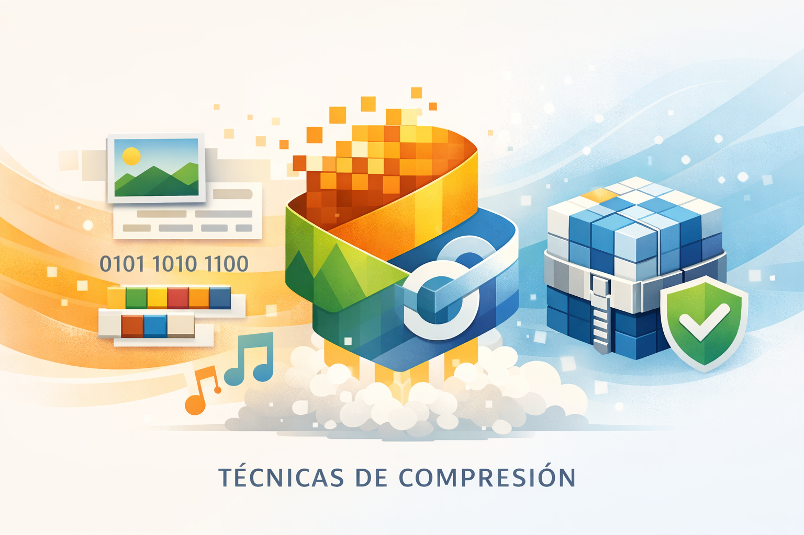
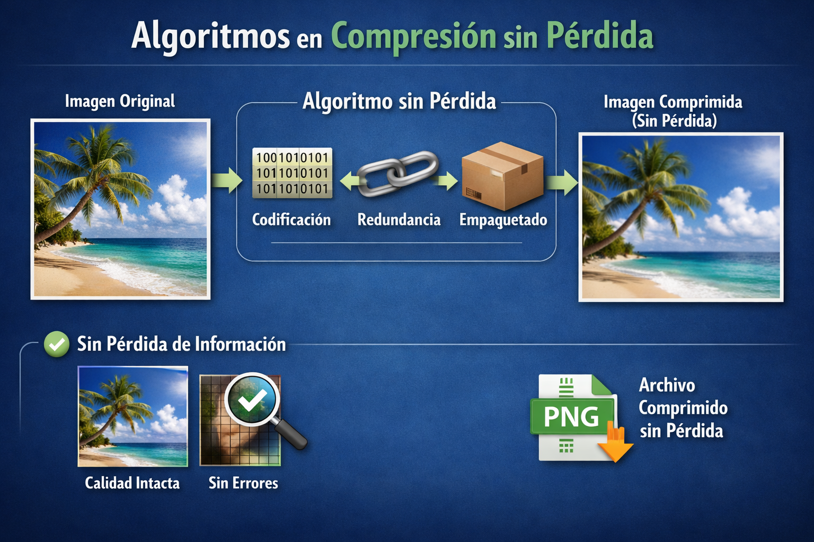

Tema II
Los algoritmos de compresión son técnicas utilizadas para reducir el tamaño de los archivos digitales sin perder o alterando mínimamente la información original. Gracias a estos métodos es posible almacenar y transmitir datos de manera más eficiente.
La compresión es fundamental en:
¿Qué es la compresión de datos?
La compresión de datos es el proceso de reducir el tamaño de un archivo o conjunto de datos para ahorrar espacio de almacenamiento y acelerar la transmisión de información.
Los algoritmos de compresión eliminan:
Objetivos Principales
Importancia de la Compresión
La compresión es importante porque permite:
Ejemplos comunes
¿Cómo funciona la compresión?
La compresión funciona identificando patrones repetitivos dentro de los datos.
Por ejemplo:
Los algoritmos reemplazan estas repeticiones con representaciones más pequeñas.
¿Por qué es posible comprimir?
Es posible porque muchos archivos contienen:
Proceso básico
1. Análisis
El sistema analiza el contenido del archivo.
2. Identificación
Detecta patrones repetidos.
3. Sustitución
Reemplaza los patrones por códigos más pequeños.
4. Reconstrucción
El archivo puede recuperarse posteriormente
Ventajas
Tipos principales
Existen dos grandes tipos de compresión:
Compresión sin pérdida (Lossless)
Permite recuperar el archivo original exactamente igual.
Compresión con pérdida (Lossy)
Elimina parte de la información para reducir más el tamaño.
Técnicas comunes
Codificación Huffman
Utiliza códigos más cortos para datos frecuentes.
Run-Length Encoding (RLE)
Comprime secuencias repetidas.
LZW
Usa diccionarios de patrones repetidos.
Transformada Discreta del Coseno (DCT
Muy utilizada en imágenes JPEG.
Aplicaciones:

¿Qué es la compresión sin pérdida?
La compresión lossless reduce el tamaño del archivo sin eliminar información. Cuando el archivo se descomprime:
Recupera exactamente el original.
Características
Ventajas
Desventajas
Ejemplos de formatos
Usos prinicpales

¿Qué es la compresión con pérdida?
La compresión lossy elimina parte de la información del archivo para lograr tamaños mucho más pequeños.
La información eliminada generalmente es poco perceptible para el usuario.
UCaracterísticas
Ventajas de las redes
Las redes son fundamentales porque:
CONCLUSIÓN
Los antecedentes de la comunicación representan la evolución de los medios que han permitido transmitir información a lo largo de la historia. Desde la prensa hasta las redes de computadoras, cada avance tecnológico transformó la manera en que las personas interactúan, aprenden y comparten información.
Actualmente, estos medios continúan evolucionando gracias a la tecnología digital y al Internet, formando parte esencial de la vida cotidiana y de la comunicación global.